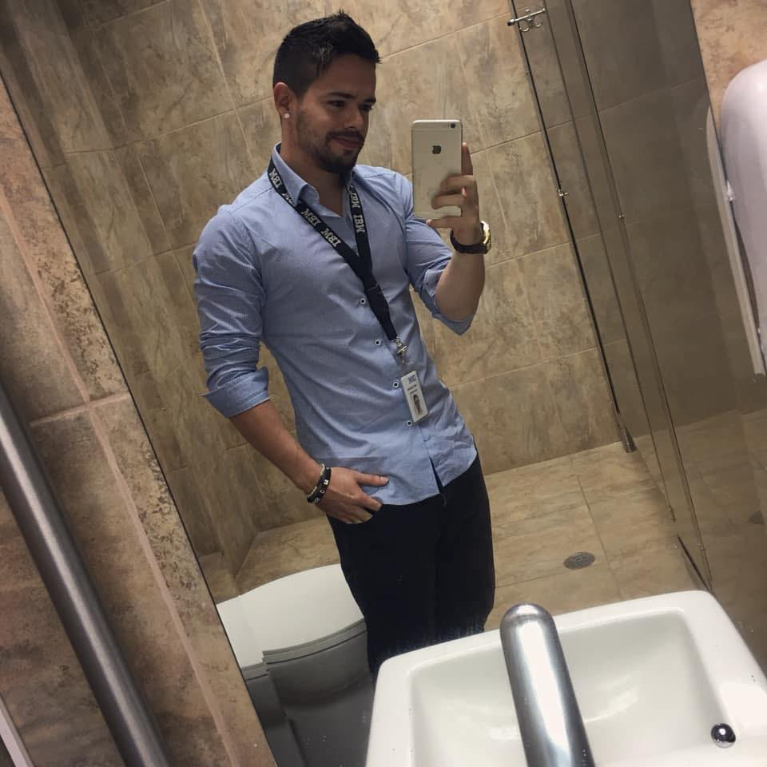

Junta Directiva de la Federación de Parkour
Presidente
Practicante de Parkour--ADD de la mano de la primera generación de Parkour en San José en la cual se
encontraban Manfred Castro, Miguel Torres, Halden Castro,Daniel linch, Saulo Quiros, Oskar Valverde,
Antonio Ramírez, y otros pero con ellos empecé y eran los más activos en el Parkour en ese momento.
Cheko Ávila y Sebastián, no Manfred tivu no tuve la oportunidad de entrenar mucho con ellos.
“Después de 5 años de práctica con altos y bajos aprendiendo con errores y experiencias, el Parkour me
enseño un mensaje que solo a través de sus raíces NO COMPETITIVAS pude entender. Funde la Organización
Evolución Natural en el 2013 al ver el PARKOUR como una herramienta muy poderosa para ayudar a
diferentes personas a entender una filosofía altruista y de amor por la naturaleza y realizamos la
primera reunión de Parkour en Costa Rica ”
Después de esta primera reunión hemos organizado unas 25 en los últimos años, siempre compartiendo
movimientos y mucho aprendizaje ".
-Ha viajado a realizar proyectos en todo en todo el país e internacionales como CUBA, MÉXICO, GUATEMALA,
FRANCIA, en este último país es donde se originó el Parkour y tuvo el honor de participar en EVRY MOVE 3
y conocer a los fundadores de Art du deplacement, los Yamakasi y al creador del Freerunning en
Inglaterra Sebastian Foucan.
-Campeon en 2017 de la carrera de obstáculos Under Armour Challengue , con todos los gimnasios del pais
invitados y 300 atletas.
Actualmente:
Miembro de la Federación Internacional de Parkour, y Evolución Natural es parte de la Federación Mundial
de Parkour.
-Es Instructor y director de la escuela de Parkour en el Proyecto de desarrollo Comunitario Parque la
Libertad.
-Instructor de Parkour en colegios como Country Day School, Liceo Franco Costarricense, True North.
Además de los gimnasios Bamboo Kids Center y Gravite Gym.
-Colaborador de organizaciones como la Asociación de Calistenia ASDECA
-Parte de la organización del Camp Jam y Los Juegos de Parkour.
-Estudiante de Educación Preescolar en la Universidad Estatal a Distancia de Costa Rica.
-Director de la Academia Evolución Natural en San José Coronado.
Vicepresidente
Hola, soy Fabio Araya, he estado entrenando parkour durante 10 años, comencé cuando tenía 14 años cuando
vi un documental en la televisión sobre algunos chicos locales saltando en la ciudad, en ese momento
decidí que quería probar y aprendí lo básico con tutoriales de youtube y un viejo colchón en mi patio;
ahora tengo 24 años, soy guía de turísmo naturalista que trabaja en las selvas de Costa Rica, explicando
a los turistas sobre la biodiversidad de mi país. Me encanta viajar, obtener nuevas experiencias con
personas de diferentes lugares y aprender de ellos, la mayoría de mis viajes a diferentes países son
para entrenar parkour en lugares increíbles y gimnasios con atletas increíbles, esta es mi pasión.
Secretario de la Federación de Parkour de Costa Rica.
Arquitecto Fron-End y Ingeniero en Redes, 25 años.
CEO de Camp Jam.
CEO de Natural Movement
Practicante de parkour durante 10 años.
Actualmente atleta de MMA.
Me apasiona el movimiento y todas las disciplinas que abarca esta palabra, pero practico
principalmente artes marciales y parkour. Estas disciplinas despertaron mi gran pasión por el
deporte.
El parkour me llevó a grabar escenas para los clips de cantantes nacionales como Stuntman, a grabar
anuncios de algunas compañías, presentaciones de circo, proyectos de caridad, etc. Gracias a esto, pude
ser profesor de Parkour para; "Enamorate de tu Ciudad", para nuestro Parkour Box y para diferentes
instituciones educativas. Además de eso, desde 2014, he lanzado 5 eventos de Parkour Camp llamados
"Camp-Jam" para fomentar la herencia de los valores éticos de Parkour.
Actualmente estoy diseñando un método de entrenamiento orientado a todas las disciplinas llamado
"Movimiento Natural".
Johnny Montero Sanabria, 23 años. Psicólogo, Músico y Traceur. Comienza su práctica en el parkour y
freerunning a la edad de 18 años en 2014. En 2019, comienza a trabajar en un proyecto de parkour social
llamado Pk506 que invita a la comunidad de San José a unirse a clases gratuitas de parkour todos los
sábados y a otros eventos relacionados con parkour. En 2018, obtuvo su licenciatura en psicología en la
Universidad Nacional de Costa Rica.
Actualmente, se dedica principalmente a la pedagogía del parkour a
niños y adolescentes, buscando ayudarlos a crear conciencia de un estilo de vida saludable y un
bienestar integral.
Hola, soy Jorge Gutiérrez Piedra, he estado dedicado a diferentes disciplinas urbanas durante
aproximadamente 14 años, he trabajado enseñando bailes urbanos y también acrobacias y parkour. Tuve la
oportunidad de estudiar en la escuela de gimnasia Ollerup en Dinamarca, me especialicé en
acondicionamiento de calistenia / parkour y Parkour y freerunning.
Actualmente estoy estudiando en la
Universidad de Costa Rica, ciencias del movimiento humano, y trabajando con la federación de Parkour de
Costa Rica, ¡con el enfoque de promover y crear más oportunidades para la comunidad de parkour en
nuestro país!
Creadora de AcroFit, ‘Gimnasia integral’, entrenadora personal y artista multidisciplinaria del
movimiento, formada en gimnasia artística desde los tres años, como atleta de alto rendimiento con Issac
Vargas. Bailarina y artista circense desde el 2010. Bachiller en psicología, egresada de la UACA. Le
inspira la relación mente-cuerpo, el autoconocimiento a través del movimiento y su aporte a la
salud.
Continúa su desarrollo practicando distintas disciplinas acrobáticas y de movimiento (‘handbalance’,
acroportes, parkour, tricking, yoga, danzas árabes, de la india, contemporánea, tribal fusion, danza
vertical y otras.).
Inicia su práctica de 'hand balance' con el maestro Mauricio Jara (2012) y a sido parte del programa
“Formador de Formadores” del Parque La Libertad recibiendo capacitaciones en Artes Circences y Circo
Social con profesionales nacionales y extranjeros y especializándose como volante, bailarina y acróbata
(gimnasia, parada de manos, acroportes). Participó en el entrenamiento impartido por Roberto Magro “El
Artista de Circo, figura creativa y formación”.
Participó como profesora de acrobacia el primer proyecto de circo social a cargo del Parque la Libertad
en el 2016. Forma parte de Circo Sinaí, proyecto de circo social realizado por ASOCARTE, con los niños
de la comunidad de Sinaí en San Rafael de Montes de Oca. Participó desde el inicio del proyecto en el
2017, como artista en pasacalles y espectáculos para la comunidad y dirigió el módulo de Acrobacia
durante ocho sesiones en el 2018. En julio del 2019 impartió un taller mano a mano junto a Daniel
Ramírez en Pérez Zeledón, para el proyecto de circo social, Circo Fantazztico.
Ha trabajado con distintas compañías escénicas del país (Punto Muerto, Cirko Vivo, Alapadma Troupe, y
otras) y en festivales de arte como artista y tallerista invitada (FIA, TRANSITARSE, Solodós, La
Machine, BRINCA BRUNCA, FITA, The Tribal Massive Las Vegas, entre otros.), ha impartido clases y
capacitaciones a personas de todas las edades en academias, estudios de movimiento y centros de
desarrollo, también ha compartido sus conocimientos en el curso para profesores de yoga en Yoga Mandir,
(2018 y 2019).
Actualmente, trabaja en el proyecto artístico y de bienestar integral ‘Big Bang’ junto a Daniel Ramírez,
ofreciendo espectáculos y talleres de artes circenses, disciplinas físicas y psicología.
Nacida en Venezuela, vive en Costa Rica hace casi 10 años. Se considera una apasionada por el
movimiento y el estudio del ser. Esto la ha llevado a practicar y estudiar distintas disciplinas como la
danza contemporánea, la acrobacia, el yoga y el Parkour... La experiencia la ha llevado a indagar en la
biomecánica del movimiento, la propiocepción, el cuerpo energético ligado al cuerpo fìsico y el estudio
de la mente.
Se ha formado de manera independiente con distintos maestros de danza, movimiento, circo y yoga siendo
parte de diferentes talleres, capacitaciones, encuentros y giras a nivel nacional e internacional.
En el año 2016 se certifica en ashtanga vinyasa yoga con 500hrs de formación avaladas por el yoga
alliance en el centro "Ashtanga Yoga Satya".
Actualmente se desempeña como maestra de yoga y movimiento
practicando continuamente y ampliando sus conocimientos mediante cursos y capacitaciones constantes
afines, ahondando también en la filosofía y estudio del mindfulness.
Todo esto con el objetivo de poner su conocimiento al servicio y compartir la experiencia del propio
reconocimiento del cuerpo y sus infinitas capacidades.
Sorian ha tenido la oportunidad de impartir diferentes clases maestras y workshops en Costa Rica y en
México. A nivel nacional actualmente imparte talleres específicos de asanas y filosofía dentro de
programas de formación para profesores de yoga así como distintos talleres experienciales que ha
diseñado donde aborda el movimiento mediante el juego y prácticas de atención plena combinando sus
estudios de danza, yoga y filosofía del parkour ligado a la respiración y el campo energético. Todas
estas herramientas le han permitido seguir experimentando el arte del movimiento y desplazamiento de
forma más consciente y saludable.
Shara Pérez Estrada 24 años.
Ingeniera Mecánica y traceuse.
Comienza a practicar parkour y freerunning a la edad de 16 años en los entrenamientos del proyecto
enamórate de tu ciudad impartidos en el parque Morazán.
Actualmente trabaja en el proyecto de la construcción del Nuevo Aeropuerto Internacional Felipe Ángeles,
en México; emocionada por el inicio de este nuevo proyecto Federación de Parkour Costa Rica y por dar a
conocer esta disciplina sobre el autoconocimiento, compañerismo y el amor por el movimiento.
Me gusta mucho mantenerme activa, siempre he sido una chica a la cual le gustan las artes y los
deportes y esto me llevo a recibir mi primera clase de parkour hace 10 meses. Esperando poder continuar
aún mas.
Desde niña he practicado el fútbol. Luego inicie en las artes circenses gracias a la influencia de mi
padre ; desde pequeña soy Payasa “ArcoIris Narices Rojas” y trabajo junto a mi familia en nuestro Circo
Narices Rojas, en el cual soy la acróbata en Telas, esta disciplina empecé a practicarla hace algunos
años.
Ahora soy miembro de la Federación de ParKour, esperando poder servir de influencia para muchas chicas y
chicos que quieran unirse al ParKour.
Andrea Alfaro Herrera. Nacida en Alajuela, inicia su amor por el movimiento desde su niñez. En 1999
inicia su carrera como actriz y bailarina en la UNA. En el 2001 decide probar suerte en el extranjero y
se aventura en un viaje a Alemania para estudiar Danza contemporánea en la Folkwang Hochschule, escuela
apoyada por la bailarina y coreógrafa Pina Bausch, con quien trabajo en una oportunidad siendo parte de
un festival de coreografías creadas por ella.
Mientras estudiaba en esta escuela, también tuvo la oportunidad de trabajar con diferentes coreógrafos.
En el 2005 y hasta el año 2013 fue profesora de Danza clásica en Italia. En el 2013 vuelve a Costa Rica
para establecerse con su familia haciendo una pausa de varios años en su relación con el estudio del
movimiento.
Sigue entrenando sola hasta el 2018, año en el cual decide volver de lleno de vuelta a la Danza
contemporánea, esta vez tratando de investigar otras ramas de movimiento que puedan complementar su amor
por el movimiento.
Actualmente trabaja en proyectos varios direccionados hacia el estudio del movimiento.
Foto
Historia de la Federación de Parkour Costa Rica
Al rededor de los años 2004 y 2005 en Costa Rica el parkour era un concepto casi en su totalidad
desconocido. Sin embargo existían algunas personas, en especial jóvenes entusiastas de los deportes extremos
o no convencionales, que habían escuchado hablar sobre la actividad o que habían visto alguna película de
jackie chan e inclusive alguna del grupo de parkour Francés los yamakasi.
En la capital, hubo pequeños grupos de 2 o 3 personas que se reunían esporádicamente a practicar, danza
contemporánea, skateboarding o BMX y que como diversión después de la práctica imitaban lo que habían visto
en la televisión o con suerte en Internet, sin embargo para esos años era casi imposible encontrar un video
relacionado, en especial si no sabias el nombre de la actividad que estabas intentando practicar.
En esos años se dieron a conocer entre círculos de amigos, hábiles practicantes esporádicos, que sabian que
la actividad existía pero no sabían muy bien como se llamaban los movimientos o como se hacían, entre ellos
destacaron jóvenes como Sebastián FV, mejor conocido como "Tian", Manfred Castillo alias Tibú, Emilio Ávila
"checo", Mario López y José Álvarez bailarines profesionales de danza contemporánea.
Sin embargo el primer grupo que se puede decir que fue fundador como actividad relativamente fundamentada,
en comunidad, con características claras, como contar con un grupo de integrantes que se identificará así
mimos como traceurs o practicantes de parkour, que sabian el nombre de algunos movimientos y conocian un
poco sobre la historia, orígenes y fundadores de la actividad, fue algo que no se dio sino hasta el año
2007.
Asociados Fundadores
-
Miguel Torres Castillo
Entrenador Personal
Fundador/Proprietário en MTC / Physical Development
Estudió en Universidad Nacional Costa Rica, UNA
De San José -

Ignacio Granados
Cyber Security Specialist en IBM Security
Estudió Systems engineering en UAM Costa Rica
De San José
-
Ariana Bolaños
Bailarina profesional de danza contemporánea y danza africana.
Inicia sus estudios en danza contemporánea y ballet en el 2008. En el 2009, inicia la carrera de Danza Contemporánea en la Universidad Nacional. En el 2012, inicia sus estudios de danza africana estilo guineano. Se gradúa de la carrera de Danza en el 2012 y desde entonces se ha dedicado al movimiento como su estilo de vida, incorporando además otros estilos de movimiento como yoga, capoeira, parkour y ejercicios funcionales. Ha llevado talleres de danza contemporánea con profesores nacionales e internacionales y de danza africana con múltiples profesores tanto mexicanos como africanos. En el 2013, se une a la agrupación de danza y percusión africana FORE Movimiento Afro. Ha participado en diferentes festivales como el Festival de Coreógrafos, Festival Internacional de las Artes, Festival Envision, Yuba Festival, Festival Sonora, La Machine Festival, entre otros. En el 2019, participó en la residencia de ADN Dialect (Suiza) en Costa Rica. Actualmente, trabaja como profesora de danza contemporánea y ballet en el Liceo Franco Costarricense y en el Centro Cultural San José. Forma parte de la agrupación FORE Movimiento Afro que ofrece espectáculos de danza y percusión africana y trabaja como bailarina contemporánea independiente. -
 Manfrezco es Manfred Castro Barboza
Manfrezco es Manfred Castro Barboza
Nació en San José, Costa Rica, su trayectoria artística inicia desde muy temprano. A los 5 años de edad por medio taekwondo desarrolla sus habilidades motoras, luego por influencia familiar de su abuelo (Don Felo) quien lo introduce al mundo del yoga, estudió unos años de escuela primaria en el Conservatorio de Castella, donde explora diferentes ramas de artísticas; música, artes plásticas, y teatro. En el 2005 a sus 18 años llega a convertirse en uno de los pioneros de Parkour en Costa Rica, y de ahí llega a conocer el mundo del circo, malabares, fuego y psytrance.
Actualmente se dedica tiempo completo a varias disciplinas artísticas, espectáculos de fuego, clown, talleres de parkour y talleres de malabares con fuego, a nivel nacional e internacional; fundador de Producciones Circo Equilibrio y productor del Nahual Spirit Festival (Psychedelic music & arts festival). -
Daniel Lynch
Artista acróbata
Con más de 14 años de haber empezado a prácticar Daniel tiene un fuerte sentido de comunidad y acecibilidad para compartir lo que ha aprendido en su tayectoria. -
Jose Ricardo Oviedo
Entusiasta de los deportes de aventura y las artes marciales como Judo, Sambo y taekwondo, a mediados del 2007-2008 inicia la práctica de parkour junto con la primera generación de parkour en Costa Rica, Manfred Castro, Miguel Torres, Halden Castro, Saulo Quiros y Daniel Lynch. Al mismo tiempo inicia como acróbata aéreo en telas y luego trapecio estático.
En el 2013 encuentra su pasión en entra en la escuela de Ciencias del Movimiento Humanos en Turrialba donde inicia sus estudios como educador físico con énfasis en deportes de aventura.
En el 2015 aprovecha una beca para ir a estudiar Gimnasia Danesa en la escuela de gimnasia de Ollerup, Dinamarca, es ahí donde se especializa en movilidad articular, gimnasia danesa y continua su práctica de parkour. Además de eso descubre un amor por la escalada deportiva de la cual logra aprender a como realizarla y su pedagogía. En el 2016 abre un club de parkour en conjunto con la oficina de recreación para los estudiantes de la UCR en Turrialba y es asistente de curso de pedagogía de la gimnasia. Durante este tiempo da clases de Gimnasia para bailarinas de ballet en Cartago, además de ser instructor y encargado de la sala de pesas del Gimnasio de la UCR, Turrialba A inicios de agosto del 2017 logra abrir, junto con Gerardo Redondo y Javier Conejo (ambos exalumnos de Ollerup), Hygge Gym Costa Rica, el cual se convierte en la segunda academia especializada en Gimnasia Danesa en Costa Rica, donde además de dan clases especificas de parkour y freerun.
Actualmente es Coach de Movilidad en Damanto crossfit, profesor de natación para bebes, niños y adultos, Head Coach de Hygge Gym Costa Rica